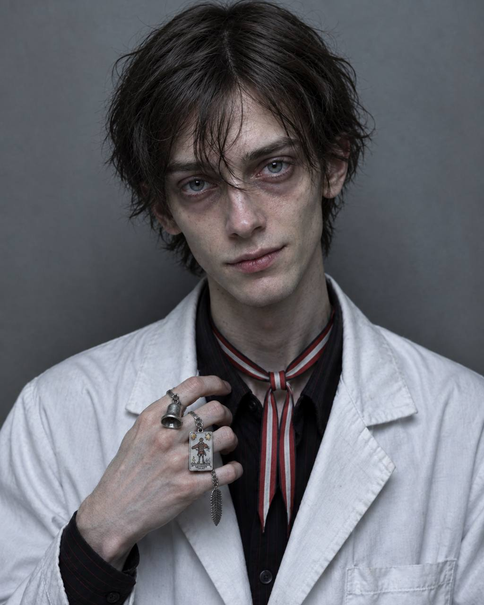

СТАТУС:
АКТИВЕН
ДОПУСК:
II
БАЗОВАЯ ИНФОРМАЦИЯ
ИМЯ:
Ян Мурр
ПОЗЫВНОЙ:
«Паяц»
ДАТА РОЖДЕНИЯ:
14 февраля 2002 года
ВОЗРАСТ:
24 года
МЕСТО РОЖДЕНИЯ:
[ДАННЫЕ УДАЛЕНЫ] — предположительно Британская Колумбия, Канада
ГРАЖДАНСТВО:
Канадское
ПОЛ:
Мужской
РОСТ / ВЕС:
167 см / 54 кг
ГРУППА КРОВИ:
AB- (Rh отрицательный)
СЛУЖЕБНАЯ ИНФОРМАЦИЯ
ДОЛЖНОСТЬ:
Младший научный сотрудник отдела аномальной психологии
ПОДРАЗДЕЛЕНИЕ:
Сектор Чарли, департамент психологии
СРОК СЛУЖБЫ:
6 лет
МЕСТО СЛУЖБЫ:
Зона 03, Аляска